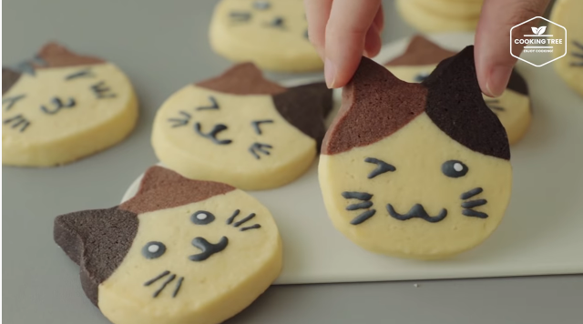

Cat Cookies

Image Credits
Description:
These cat cookies are so crispy, and every bite you take will turn you closer to become a cat.
The legend says at the fifth bite, you will start to meow and grow a tail.
If you are single, use this as a gift and you will get yourself a girlfriend in no time, guaranteed.
Ingredients:
- 150g Unsalted butter
- 1g Salt
- 1 Egg
- 3g Vanilla extract
- 280g Cake flour
- 3g Cocoa powder
- 25g Powdered sugar
Steps:
- Melt the butter
- Break and add the egg into the bowl, and continue to stir
- Put in 3 drops of vanilla extract
- Pour the cake flour and the powdered sugar in, and continue to stir
- Separate 2 dough out, and mix the separate doughs with cocoa powder
- Mould the yellow dough into the face part, and the separated darker doughs into ear.
- After the cat shape is created, leave it in the fridge for 15 minutes
- Put into oven at 160'C for 15 minutes
- Put baked cookies into good-looking container, and tie it with some ribbons
- Ready to be given to your crush!